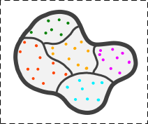
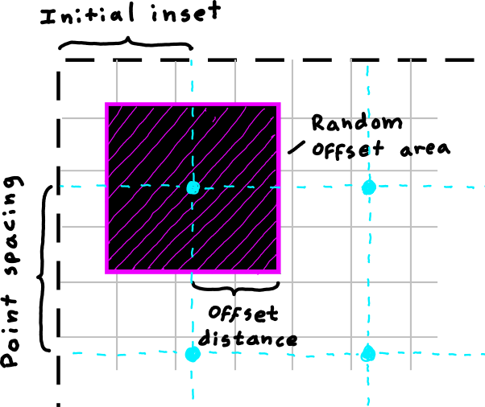
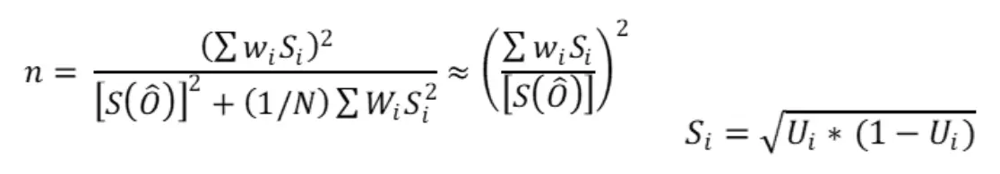
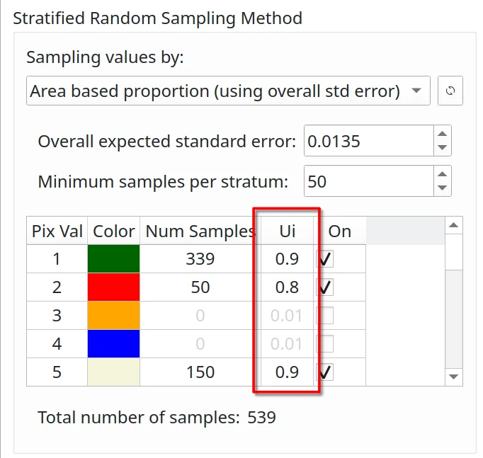

Sampling Design#
Assessing the accuracy of thematic maps requires sampling, as verifying every location on the ground is neither practical nor cost-effective. An effective sampling design depends on characterizing the distribution of map classes, determining the appropriate sample size and allocation, and selecting a suitable sampling scheme.
Since sampling design directly affects both cost and statistical reliability, it is one of the most critical components of thematic map accuracy assessment, ensuring that reference data are selected using statistically valid and representative procedures [Stehman and Czaplewski, 1998]. A well-structured sampling design is essential for producing unbiased accuracy estimates and reliable area estimates.
According to Olofsson et al. [2014], probability sampling is recommended because every unit in the population has a known, non-zero chance of selection, thereby allowing for design-based, statistically rigorous inferences.

Simple Random Sampling (SRS)#

Simple random sampling provides equal probability to all units. It is appropriate if the sample size is large enough to ensure that all classes are adequately represented and could be useful to serve the needs of a wide group of users.
Advantages:
Extremely simple to use
Adapts to the need to increase or decrease the sampling units
Less complex statistical estimators compared to other sampling designs
Disadvantages:
Underestimates the less representative classes
Not well distributed spatially
Stratified Random Sampling (STR)#
{kind=link}
Stratified random sampling increases precision via allocation across different map classes or strata. It is useful for reporting results when strata are of interest and the precision of accuracy and area estimates need to be improved. As a result, it is one of the most commonly used designs.
This design is recommended by Olofsson et al. [2014] as a good practice option for ensuring that rare classes are well represented.
For STR, the sample size for each stratum is calculated based on:
Class area proportions
A target standard error for overall accuracy
Anticipated user’s accuracies by stratum
If necessary, the user can manually adjust the number of samples for one or more classes, e.g., to implement the allocation proposed by Olofsson et al. [2014] or other allocation strategies.
Advantages:
Allows to increase the sample size of the less common classes
Lowers the standard errors of the accuracy estimates for rare classes
Geographic stratification could be used to ensure a good spatial distribution
Allows the option of using different sampling designs in different strata
Disadvantages:
Stratification by geographic region does not result in a gain in precision
Only the evaluation of the accuracy of the map that gives rise to the strata is allowed
Sampling with an optimal allocation leads to different probabilities of inclusion, making estimator calculation more difficult
Systematic Sampling (SYS)#

Systematic sampling promotes even spatial distribution by selecting samples at regular intervals across a grid, either by distance or pixel units. Sampling begins from a fixed or random point, starting in the top-left corner, and applies a random offset to the initial grid position.
We implemented two systematic sampling methodologies: one based on physical distances and the other on pixel units, both based on the thematic map.
{kind=link}
Systematic sampling by distance
Systematic sampling by pixel
Parameters:
Point spacing: The spacing between points in the systematic grid (in distance units or pixels)
Initial inset: The distance from the top-left corner of the study area to the first point unit
Max offset: Maximum distance along the X and Y axes from the point of the aligned systematic grid
Random offset area: The area surrounding each point where a random offset is applied
Tip
To ensure the offset area covers the entire thematic map (giving every pixel an equal probability of being selected), set the maximum offset value to half of the point spacing.
Aligned Systematic Sampling#
(When the max XY offset value is zero)
Distributes the sampling units equally for the entire study area. As long as the first sampling unit is randomly selected, systematic sampling is considered random.
Advantages:
Distributes sampling units equitably throughout the study area
Simplicity is highly attractive to end users
The variance depends on how the error is spatially distributed
Disadvantages:
If errors are located in certain areas, systematic sampling will have a lower variance
Non-existence of an impartial estimator for calculating the variance
Not desirable in the presence of uniformly distributed errors
Unaligned Systematic Sampling#
(When the max XY offset value is NOT zero)
The area is divided into smaller, regularly spaced regions, with a randomly chosen sample unit within each region. This minimizes the effects of the periodicity of errors.
Advantages:
Less susceptible to error if linearity of error is present
The calculation of the variance is acceptable and unbiased
Disadvantages:
Reduces the advantage of spatial distribution of error
The lack of an unbiased estimator
Additional Features#
Reproducibility#
The plugin ensures randomness by automatically generating a random seed for all sampling methods. However, if users require reproducible sampling results, they can set a fixed seed. Setting a known seed value ensures replicability given identical inputs and configurations.
Important
Setting a known seed ensures that the assessment can be reproduced and validated by other parties, which is critical for scientific studies and decision-making.
Minimum Distance Constraint#
A minimum distance constraint between sampling units helps prevent spatial clustering, reduces spatial autocorrelation effects, and ensures a more evenly distributed sample.
Neighbor Aggregation#
Neighbor aggregation calculates, for each candidate sample location, the number (or proportion) of adjacent pixels in a user-defined neighborhood that share the same class. This lets sampling incorporate local spatial context by favoring more homogeneous areas (high neighbor agreement) or, if desired, emphasizing transition zones (low agreement) for boundary-focused checks.
Using neighbor agreement as a criterion can improve spatial coherence in the selected samples and help mitigate over-representation of noisy edge pixels in map accuracy assessment workflows.
Post-Stratification#
AcATaMa supports post-stratification for simple random sampling (SRS) and systematic sampling (SYS), so weights can be adjusted after the sample is drawn to account for class imbalance and improve the reliability of accuracy/area estimates.
What post-stratification means#
Post-stratification groups the already selected SRS/SYS reference sample into “post-strata” (e.g., map classes) and then adjusts the estimation weights using known totals for those map classes. In AcATaMa’s analysis, based on the confusion-matrix sample counts it creates the estimated area proportions using the post-stratified estimator (tables 3 and 4) described in Olofsson et al. [2014].
When to use it#
Post-stratification is useful when SRS/SYS produces an imbalanced realized sample (for example, rare classes end up with too few points), because post-stratification can reweight the sample using known class totals to produce more defensible accuracy/area estimates. However, post-stratification reweights estimates after sampling (“sample first, classify later”), so the number of samples in each post-stratum is determined by how the initial sample falls across classes; as a result, it is not possible to control (or guarantee) the per-class sample size the way stratified sampling does.
Sample Size#
Sample Size for Stratified Sampling#
Overall Expected Standard Error - S(Ô)#

The standard error of the estimated overall accuracy that you would like to achieve. For stratified sampling, Cochran [1977] provides the sample size formula:
{kind=link}
Where:
N = number of units in the study region
S(Ô) = standard error of the expected global accuracy
Wi = mapped proportion of the area of class i
Si = standard deviation of stratum i
Ui = accuracy expected by class i
Since N is usually very large, the second term in the denominator can be discarded.
User’s Accuracy Confidence#
{kind=link}
The user’s accuracy (Ui) is the probability that a pixel classified as class i is actually class i. In general:
0.6 - 0.8: for unstable classes
0.8 - 0.95: for stable classes
Example values based on Olofsson et al. [2014] for forest change assessment:
0.6 - 0.7: forest gain (very unstable class)
0.7 - 0.8: deforestation (unstable class)
0.8 - 0.9: stable forest (stable class)
0.95: stable non-forest (very stable class)
Minimum Sample Size per Stratum#

Using stratified or post-stratified sampling, a minimum sample size of 30 [Van Genderen et al., 1978] or 50 [Stehman and Foody, 2019, Hay, 1979] per evaluated stratum is generally recommended to ensure statistical significance.